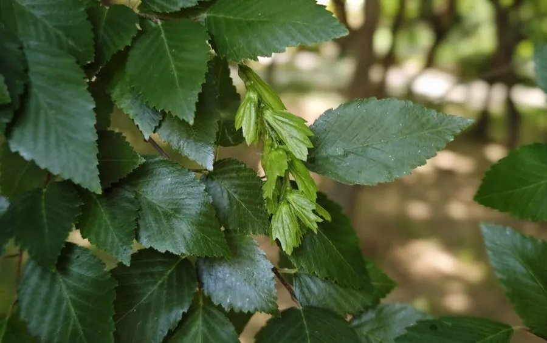

乔木 · 植物界
鹅耳枥 Carpinus turczaninowii

桦木科落叶小乔木，木材坚硬致密、耐磨损，果序下垂、苞片叶状，中国北方山地常见，也常作盆景。
- 分类
- 门被子植物门纲木兰纲目壳斗目科桦木科属鹅耳枥属
- 栖息环境
- 海拔 500–2000 米的山坡、沟谷与杂木林中，喜光稍耐阴
- 地理分布
- 中国华北、西北、华东至西南山地；朝鲜半岛、日本有分布
- 保护级别
- 暂无评估；中国未列入国家重点保护野生植物名录
物种志
鹅耳枥为桦木科鹅耳枥属落叶小乔木或灌木，高 10–15 米，树皮灰褐色、浅纵裂，小枝细，被短柔毛。叶片互生，卵形至卵状椭圆形，边缘具重锯齿，侧脉 10–14 对，表面深绿、背面淡绿并被短柔毛。花单性，雌雄同株，雄花序下垂；果序下垂，苞片叶状、3 裂，小坚果生于苞片基部，果期 9–10 月。
鹅耳枥原产中国华北、西北、华东至西南山地，朝鲜半岛、日本也有分布，多生于海拔 500–2000 米的山坡杂木林中，常与栎类、槭类混生。它喜光，也稍耐阴，耐寒、耐干旱瘠薄，对土壤要求不严，根系发达，是水土保持的优良树种。木材坚硬致密、纹理斜，耐磨损，可制农具、工具柄与家具；树形古朴、叶小而密，耐修剪，常被制作成盆景，也是庭院绿化与绿篱材料。秋季叶色转为黄褐，果序悬垂如串串小穗。
形态与习性
- 株高10–15 m，树皮浅纵裂
- 花期4–5 月，雄花序下垂
- 果期9–10 月，果序下垂、苞片叶状
- 光照喜光，也稍耐阴
- 水分耐干旱瘠薄
- 土壤适应性强，山地棕壤至褐土均可
- 主要用途木材制农具家具，盆景与水土保持
趣味知识
- 鹅耳枥的果序下垂，每枚小坚果都托着一片叶状苞片，形似一串小穗。
- 鹅耳枥木材坚硬致密，过去常用来制作农具柄与木工工具。
- 鹅耳枥耐修剪、树形古朴，是制作盆景的常用树种。
- 鹅耳枥与榛、桦树同属桦木科，但果实形态差别很大。